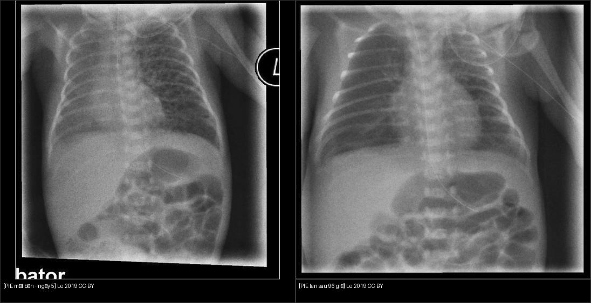
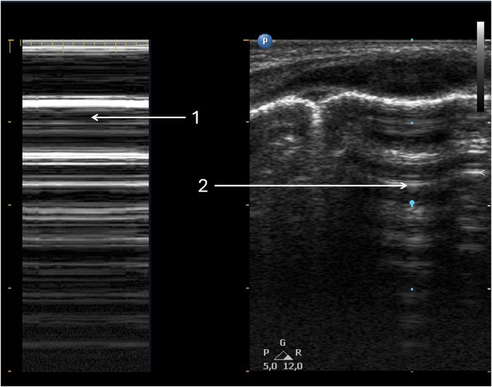
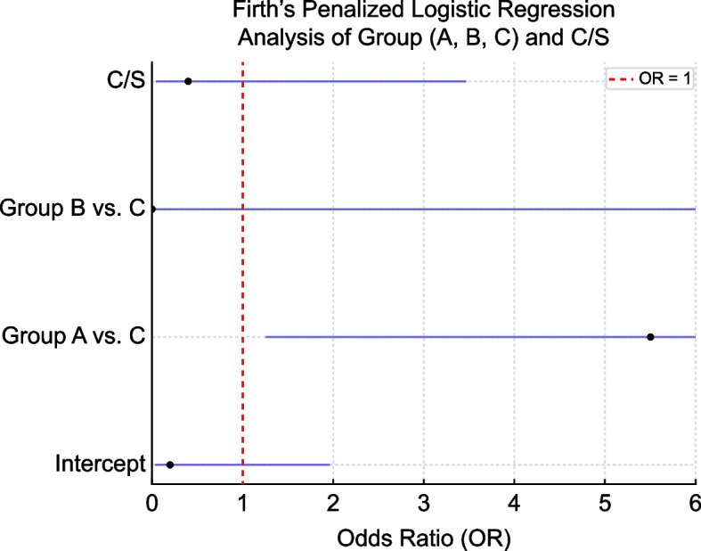
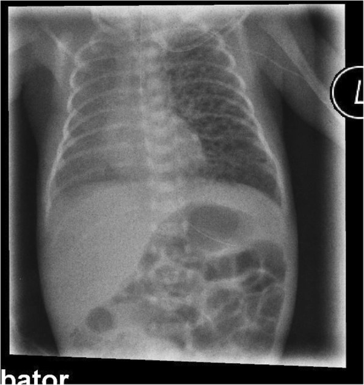
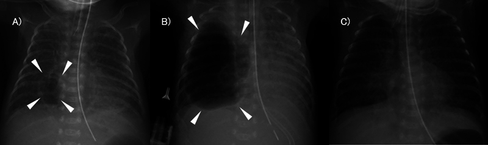
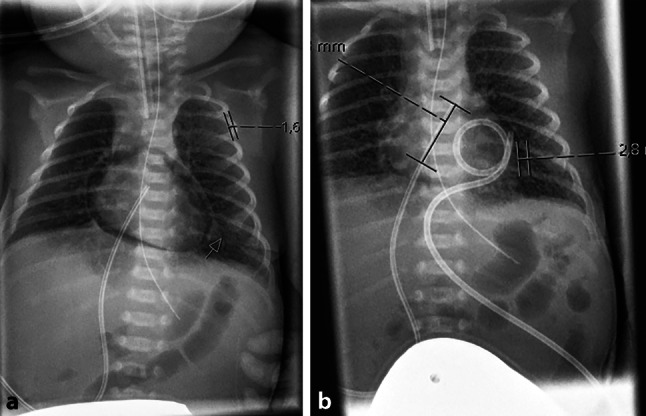
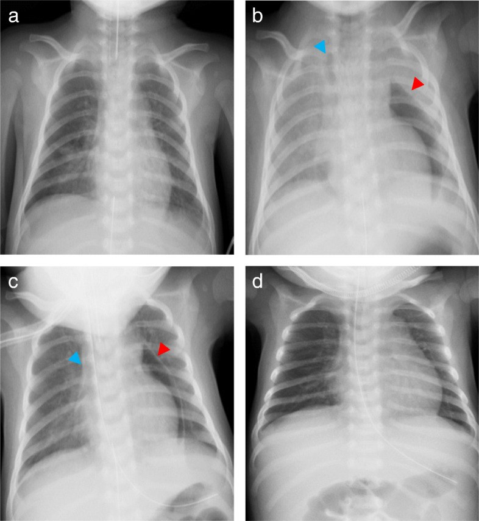
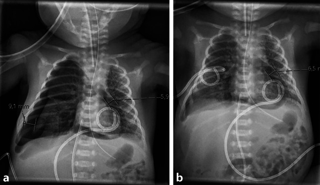

611 — Khí kẽ phổi (PIE) & tràn khí áp lực ở nhũ nhi: HFOV, nằm nghiêng bên tổn thương, nội soi phế quản chọn lọc; tràn khí màng ngoài tim / Pulmonary interstitial emphysema & tension air-leak in neonates
Tags: pattern:pie pattern:tran-khi-ap-luc pattern:tran-khi-mang-ngoai-tim vung:phoi vung:trung-that protocol:HFOV protocol:sieu-am-phoi protocol:X-quang-nguc-nhi
Mức chắc chắn (certainty): ca nguyên văn (verbatim case) — neo vào ba ca nguyên văn có hình ảnh: (1) trẻ cực nhẹ cân 327 g PIE khổng lồ một bên, khỏi nhờ dẫn lưu qua da (Hoshina et al., Cureus 2024, PMC11068432); (2) trẻ 28+1 tuần/990 g PIE một bên khỏi hoàn toàn sau 96 giờ nằm nghiêng bên tổn thương, không cần thở máy (Lei et al., BMC Pediatr 2019, PMC6676513); (3) tràn khí màng ngoài tim áp lực ở nhũ nhi (Meyer et al., JTCVS Tech 2024, PMC11347491; Tani et al., JA Clin Rep 2020, PMC7541804). Bổ sung bằng tổng hợp y văn mở (siêu âm phổi, HFOV "sigh breath", cơ chế Macklin).
1. Tổng quan bệnh học – cơ chế hình ảnh
- Khí kẽ phổi (pulmonary interstitial emphysema, PIE) là một đích của hội chứng rò khí (air-leak syndrome) ở nhũ nhi — xem 617 cho các đích khác (tràn khí màng phổi, tràn khí trung thất, khí phúc mạc). PIE là khi khí bị "giam" trong khoảng kẽ quanh mạch–quanh phế quản thay vì thoát vào khoang màng phổi/trung thất.
- Vì sao rò vào KHOẢNG KẼ (cơ chế Macklin): phế nang non tháng chưa trưởng thành (mạng đàn hồi thưa, thành mỏng) + áp lực xuyên phổi cao (thở máy, CPAP, hồi sức bóng) → phế nang căng vỡ → khí men theo mạc quanh mạch máu (MAIN the perivascular sheath) ngược về rốn phổi. Vì đi dọc mạch máu nên trên phim bóng khí kẽ nằm thành chuỗi/đám dọc mạch phổi và nhánh phế quản, không tự do đổi chỗ khi đổi tư thế.
- Vì sao thấy trên hình — vật lý: khí cản tia X cực thấp (−1000 HU trên CT, so nhu mô phổi lành −700 đến −900 HU) → đen trên X-quang và đen trên CT. Chìa khóa phân biệt là hình thái + vị trí: bóng khí kẽ li ti/tuyến tính, cố định dọc mạch máu (PIE) khác với dải khí tự do tách bờ phổi tạng khỏi thành ngực (tràn khí màng phổi) khác với khí bao quanh tim (tràn khí màng ngoài tim).
- Vì sao PIE nguy hiểm: khối khí kẽ chèn ép các nhánh mạch máu nhỏ quanh nó → thông khí chết (dead space) tăng, CO₂ tăng; PIE một bên gây đẩy trung thất, cản trở dẫn lưu phổi và là tiền thân của tràn khí màng phổi áp lực. Thể PIE dai dẳng có thể tạo nang khí khổng lồ (giant pulmonary cyst) chèn ép phổi lành.
- Ngưỡng định lượng & bối cảnh:
- HFOV thêm "sigh breath" (thì thở bù) làm TĂNG tràn khí áp lực: nghiên cứu đoàn hệ trẻ 22–25 tuần thở HFOV cứu nguy (n = 64) — tràn khí áp lực 10/64 = 15,6% trong 12–96 giờ; nhóm có xẹp phổi được sigh có nguy cơ cao hơn rõ rệt (OR 5,5; KTC 1,2–23,9; p = 0,02) (Kurimoto et al., Pediatr Neonatol / J Neonatal Perinatal Med 2025, PMC12542469). → "Sigh" KHÔNG phải biện pháp an toàn cho cực non tháng.
- PIE một bên khỏi nhờ tư thế: trẻ 28+1 tuần/990 g PIE trái ngày 5 (pCO₂ 40→55 mmHg, FiO₂ 0,21→0,28) — nằm nghiêng bên tổn thương trên nẹp + HFNC, khỏi hoàn toàn sau 96 giờ, không tiến triển bệnh phổi mạn (Lei et al., 2019, PMC6676513).
- PIE khổng lồ kháng trị: trẻ 327 g, nang phổi phải từ ngày 9, đường kính 34 mm ngày 28 kèm đẩy trung thất → khỏi nhờ dẫn lưu qua da rồi hút −10 cmH₂O trong 3 ngày (Hoshina et al., 2024, PMC11068432).
- Tràn khí màng ngoài tim (pneumopericardium) ở nhũ nhi tử vong cao, thường gắn với thông khí áp lực dương; chẩn đoán được trên siêu âm tim trước khi huyết động sụp (Meyer et al., 2024, PMC11347491).
2. Mẫu hình + chẩn đoán phân biệt theo vị trí (gamut)
- Khoảng kẽ phổi (interstitial) — PIE: bóng khí li ti/tuyến tính, xếp dọc mạch phổi và quanh phế quản, thùy căng giãn, cố định. PIE một bên hay gặp ở phổi có tổn thương nặng hơn → đẩy trung thất sang bên đối diện.
- Khoang màng phổi (pleural) — tràn khí màng phổi (tension): dải đen có bờ phổi tạng, mất mạch máu băng qua; khi áp lực (tension) → lệch trung thất, tim xa bên tổn thương, dấu rãnh sâu (deep sulcus sign) ở trẻ nằm ngửa.
- Trung thất (mediastinal): khí nâng tuyến ức (dấu cánh buồm — spinnaker-sail), dấu cơ hoành liên tục, dấu V Naclerio, lan lên cổ — xem 617.
- Màng ngoài tim (pericardial) — tràn khí màng ngoài tim: vòng khí ôm sát bóng tim, KHÔNG lan lên cổ, KHÔNG có bờ phổi tạng; có thể gây chèn ép tim (tamponade) → mạch nghịch, tụt huyết áp.
- Khí dưới da (subcutaneous): dải khí trong mô mềm thành ngực/cổ/bụng, sờ lạo xạo (crepitus) — thường đi kèm PIE/tràn khí trung thất.
- Mnemonic sàng lọc: nhũ nhi non tháng thở máy xấu đột ngột → luôn trả lời câu hỏi "khí đang ở KHOANG NÀO?" trước khi quyết định can thiệp, vì PIE có thể không cần chọc, còn tràn khí màng ngoài tim/tràn khí áp lực thì cần giải áp ngay.
3. Bảng so sánh phân biệt (ma trận đối chiếu)
| Thực thể (entity) | Hình ảnh điển hình | Chốt vào (rule-in) | Chốt loại (rule-out) | Gợi ý xác nhận |
|---|---|---|---|---|
| Khí kẽ phổi (PIE) | Bóng khí li ti/tuyến tính dọc mạch–phế quản, thùy căng giãn, cố định | Bóng khí kẽ CỐ ĐỊNH dọc mạch phổi, không đổi khi đổi tư thế | Dải khí có bờ phổi tạng, đổi chỗ theo tư thế → tràn khí màng phổi | X-quang lặp lại; siêu âm phổi (không thấy điểm phổi khu trú) |
| Tràn khí màng phổi (kể cả áp lực) | Rãnh sâu, bờ phổi tạng, không mạch vượt qua; tension → lệch trung thất | Bờ phổi tạng tách khỏi thành ngực + mất trượt màng phổi / điểm phổi trên siêu âm | Khí nâng tuyến ức + cơ hoành liên tục → trung thất | Siêu âm phổi (điểm phổi, mã vạch), X-quang thẳng/nghiêng tay |
| Tràn khí màng ngoài tim | Vòng khí ôm sát tim, không có bờ phổi tạng | Vòng khí bao quanh bóng tim, KHÔNG lan lên cổ | Dải khí giữa tim và cơ hoành + lên cổ → trung thất | Siêu âm tim (thấy trước khi sụp huyết động); X-quang thẳng–nghiêng |
| Khí dưới da / trung thất | Dải khí mô mềm cổ–ngực, crepitus | Dải khí mô mềm + tuyến ức bị nâng | Có bờ phổi tạng → PTX kèm theo | Lâm sàng (crepitus) + X-quang |

Trái: PIE trái lan tỏa, đẩy nhẹ trung thất sang phải (ngày 5). Phải: sau 96 giờ nằm nghiêng bên tổn thương + HFNC, không còn nang khí, trung thất về lại giữa (ngày 9). Đây là bằng chứng "tư thế có thể là điều trị" cho PIE một bên ở trẻ cực non tháng. Nguồn: Lei X et al., BMC Pediatr 2019, CC BY 4.0. Ảnh ghép letterbox.4. Protocol chụp + hệ phân độ/điểm chuẩn hóa
- Siêu âm phổi (lung ultrasound, LUS) tại giường — đầu tay ở NICU: thay thế nhiều phim X-quang, không bức xạ, làm tại giường, không cần vận chuyển. Với tràn khí màng phổi: mất trượt màng phổi (lung sliding), A-line sắc nét, mất B-line, M-mode dấu "mã vạch"/"tầng bình lưu" (barcode/stratosphere sign), và dấu đặc hiệu nhất — "điểm phổi" (lung point) tại ranh giới vùng rò khí/vùng phổi lành (Jagła et al., J Clin Med 2025, PMC12500432).
- X-quang ngực thẳng (AP, trẻ nằm ngửa): tìm bóng khí kẽ cố định, đẩy trung thất, rãnh sâu, khí dưới da. X-quang nghiêng tay khi khó thấy tràn khí.
- Siêu âm tim khi nghi tràn khí màng ngoài tim: vòng khí ôm tim + giảm chức năng; đây là cách phát hiện sớm trước khi huyết động sụp.
- Điều trị PIE — nguyên tắc giảm áp lực đường thở (theo bậc):
- Giảm áp lực xuyên phổi: hạ PIP/PEEP/mAP, cai máy nhanh khi được; tránh sigh breath (bằng chứng TĂNG tràn khí áp lực, OR 5,5).
- Tư thế nằm nghiêng bên tổn thương (positional therapy) cho PIE MỘT BÊN: đặt bên rò xuống dưới để phổi lành thông khí ưu tiên — ca 990 g khỏi hoàn toàn sau 96 giờ.
- HFOV khi thông khí thường thất bại (giảm thể tích khí lưu thông, tránh sang chấn thể tích).
- Liệu pháp bảo tồn thất bại + PIE khổng lồ/đẩy trung thất: dẫn lưu qua da nang khí (hút −10 cmH₂O, ca 327 g dẫn lưu 3 ngày), đặt ống nội khí quản CHỌN LỌC một bên (selective intubation) để "nghỉ" bên tổn thương, nội soi phế quản chọn lọc bịt/hút nhánh rò, và cuối cùng cắt thùy (lobectomy) trong ca kháng trị.
- Điều trị tràn khí áp lực / tràn khí màng ngoài tim: chọc giải áp ngay (tràn khí màng phổi áp lực: liên sườn 2–3 cạnh xương ức; màng ngoài tim: đường dưới mũi ức dưới siêu âm) → đặt ống dẫn lưu.
- Cạm bẫy huyết động: ở bệnh nhân có thông màng ngoài tim–khí trời (như sau chọc/dẫn lưu màng tim), áp lực đường thở dương (PPV) có thể CHỮA tràn khí màng ngoài tim (tăng áp lực trong lồng ngực chặn khí bị hút vào), trong khi hít vào gắng sức (do hẹp đường thở trên, liệt dây thanh) lại hút khí vào màng tim (Tani et al., 2020, PMC7541804).
- Flowchart xử trí PIE / tràn khí áp lực ở nhũ nhi:
flowchart TD
A[Nhũ nhi non tháng thở máy xấu đột ngột] --> B[Siêu âm phổi + X-quang + siêu âm tim nếu nghi]
B --> C{Khí ở khoang nào?}
C -->|Bóng khí kẽ CỐ ĐỊNH dọc mạch| D[Khí kẽ phổi - PIE]
C -->|Bờ phổi tạng + mất trượt| E[Tràn khí màng phổi]
C -->|Vòng khí ôm tim, không lên cổ| F[Tràn khí màng ngoài tim]
C -->|Nâng tuyến ức + cơ hoành liên tục| G[Tràn khí trung thất]
D --> H{PIE một bên?}
H -->|Có| I[Nằm nghiêng bên TỔN THƯƠNG + giảm PIP/PEEP]
H -->|Không / lan tỏa| J[Giảm áp lực đường thở, cai máy, cân nhắc HFOV]
I --> K{Thất bại / nang khổng lồ đẩy trung thất?}
J --> K
K -->|Có| L[Dẫn lưu qua da -10 cmH2O ± NKQ chọn lọc ± nội soi phế quản; cắt thùy khi kháng trị]
E --> M{Dấu hiệu ÁP LỰC: lệch trung thất + sốc?}
M -->|Có| N[Chọc giải áp liên sườn 2-3 NGAY -> đặt ống dẫn lưu]
M -->|Không| O[Đặt ống dẫn lưu + theo dõi]
F --> P[Chọc giải áp dưới mũi ức dưới siêu âm + đặt catheter màng tim]
G --> Q[Oxy chọn lọc, theo dõi; chỉ can thiệp khi trung thất áp lực]

Tràn khí màng phổi trên siêu âm phổi: (1) M-mode dấu "mã vạch"/"tầng bình lưu" (barcode sign) — mất trượt màng phổi; (2) cùng vùng trên 2D. Siêu âm giúp phát hiện trước X-quang và lặp lại tại giường. Nguồn: Jagła M et al., J Clin Med 2025 (PMC12500432), CC BY 4.0.
Forest plot (hồi quy Firth): nhóm có xẹp phổi được sigh breath (Group A) có OR 5,5 (KTC 1,2–23,9; p = 0,02) so với nhóm chứng (Group C) — "sigh" làm tăng tràn khí áp lực ở trẻ 22–25 tuần. Nguồn: Kurimoto T et al., 2025 (PMC12542469), CC BY 4.0.5. Biến thể bình thường và cạm bẫy
- PIE thoáng qua tự tiêu ở đa số trẻ → không vội can thiệp; nhưng PIE dai dẳng/một bên đẩy trung thất phải theo dõi sát vì dễ tạo nang khổng lồ và tràn khí áp lực.
- Bẫy "sigh breath" tưởng an toàn: thêm thì thở bù vào HFOV để "mở phổi" lại tăng tràn khí áp lực ở cực non tháng (OR 5,5) — không dùng thường quy.
- Bẫy ngụy biện "PPV luôn làm nặng tràn khí màng ngoài tim": khi có thông màng tim–khí trời, PPV có thể chữa, còn hít vào gắng sức (hẹp đường thở trên) lại hút khí vào màng tim — nhớ siêu âm tim và đánh giá cơ chế.
- Không nhầm PIE với tràn khí màng phổi: PIE không cần chọc/đặt ống; đặt ống vào PIE không những vô ích mà còn thủng nang khí. Xác nhận bằng bóng khí cố định dọc mạch (X-quang) và mất/không mất trượt (siêu âm).
- Bỏ sót đồng thời (satisfaction of search): thấy PIE rồi dừng → bỏ sót tràn khí màng phổi/trung thất/màng tim kèm theo (cùng một đợt rò khí, nhiều đích). Luôn đọc đủ các khoang.
- Siêu âm tim che khuất bởi khí: nếu "không thấy tim" trên siêu âm tim gấp, nghĩ tràn khí màng ngoài tim và kiểm tra cửa sổ khác trước khi kết luận hình ảnh kém (Meyer et al., 2024).
- Dấu hiệu trẻ nằm ngửa che tràn khí: khí dồn trước và đáy → tìm rãnh sâu hoặc chuyển sang siêu âm nghiêng tay.
6. Tự lượng giá — Blind Quiz ngay trên trang tĩnh
Ảnh trơn ở NGOÀI, dấu hiệu + chẩn đoán giấu trong khối "bấm để hiện đáp án". Mở trên Pages: tự đoán rồi bấm mở đáp án.
Ca 1 — Trẻ 28+1 tuần/990 g, PIE một bên ngày 5.

- Gợi ý lâm sàng: rất non tháng, đang CPAP mũi + HFNC, pCO₂ tăng 40→55 mmHg, FiO₂ tăng lên 0,28.
- Câu hỏi: Mô tả dấu hiệu chính và bên tổn thương? Xử trí đầu tay (không dùng máy thở)?
Bấm để hiện đáp án (findings + chẩn đoán)
- Dấu hiệu: PIE trái lan tỏa — bóng khí kẽ xếp dọc mạch phổi trái, thùy trái căng giãn, đẩy nhẹ trung thất sang phải.
- Chẩn đoán: PIE một bên ở trẻ cực non tháng. Xử trí: nằm nghiêng bên tổn thương (trái) trên nẹp + HFNC → khỏi hoàn toàn sau 96 giờ, không tiến triển bệnh phổi mạn.
- Nguồn ảnh: Lei X et al., BMC Pediatr 2019 (PMC6676513), CC BY 4.0.
Ca 2 — PIE khổng lồ kháng trị ở trẻ cực nhẹ cân.

- Gợi ý: trẻ 327 g, thở SIMV; nang phổi phải xuất hiện ngày 9, đường kính 34 mm ngày 28 kèm đẩy trung thất dù đã nằm nghiêng + HFOV + corticoid.
- Câu hỏi: Ba mốc phim (A, B, C) ứng với các thời điểm nào? Lựa chọn nào đã cứu trẻ?
Bấm để hiện đáp án (findings + chẩn đoán)
- Dấu hiệu: (A) ngày 9 — PIE xuất hiện; (B) ngày 29 — nang khổng lồ lớn nhất; (C) ngày 32 — sau rút catheter, nang xẹp.
- Chẩn đoán: nang khí do PIE dai dẳng kháng trị → dẫn lưu qua da rồi hút −10 cmH₂O trong 3 ngày (không biến chứng). Đây là lựa chọn khi bảo tồn thất bại.
- Nguồn ảnh: Hoshina Y et al., Cureus 2024 (PMC11068432), CC BY-NC-ND — giữ nguyên bản.
Ca 3 — Tràn khí màng ngoài tim ở nhũ nhi non tháng.

- Gợi ý: trẻ 29 tuần, phát hiện trên siêu âm tim khi khó thấy bóng tim; kèm tràn khí màng phổi phải.
- Câu hỏi: (a) và (b) khác nhau thế nào? Vì sao chẩn đoán sớm quan trọng?
Bấm để hiện đáp án (findings + chẩn đoán)
- Dấu hiệu: (a) vòng khí tròn ôm sát bóng tim — tràn khí màng ngoài tim; (b) sau đặt catheter màng tim, khí hết.
- Chẩn đoán: tràn khí màng ngoài tim. Phát hiện trước khi huyết động sụp (trên siêu âm tim) rồi chọc/dẫn lưu màng tim giúp cải thiện sống còn; đây là biến chứng tử vong cao.
- Nguồn ảnh: Meyer S et al., 2024 (PMC11347491), CC BY 4.0.
Ca 4 — Tràn khí màng ngoài tim áp lực: 4 thì diễn tiến.

- Gợi ý: nhũ nhi 28 ngày sau mổ cung chủ, liệt dây thanh quặt, khó thở tăng dần.
- Câu hỏi: Bốn panel a–d tương ứng các mốc nào? Vì sao thông khí áp lực dương lại CHỮA được ở đây?
Bấm để hiện đáp án (findings + chẩn đoán)
- Dấu hiệu: (a) ngay sau chọc màng tim; (b) trước đặt lại nội khí quản (~2,5 giờ sau nhập ICU); (c) 10 phút sau đặt lại nội khí quản; (d) sau rút ống dẫn lưu. Mũi tên đỏ = tràn khí màng ngoài tim; mũi tên xanh = tràn khí trung thất.
- Chẩn đoán: tràn khí màng ngoài tim do "hút khí" qua lỗ dẫn lưu khi hít vào gắng sức (hẹp đường thở trên). PPV làm tăng áp lực lồng ngực → chặn khí vào màng tim → khỏi.
- Nguồn ảnh: Tani M et al., JA Clin Rep 2020 (PMC7541804), CC BY 4.0.
Ca 5 — Bằng chứng "sigh breath" làm hại.
- Câu hỏi: Trục hoành biểu diễn gì? Nhóm nào tăng nguy cơ và mức tăng bao nhiêu?
Bấm để hiện đáp án (findings + chẩn đoán)
- Dấu hiệu: OR trên trục hoành, đường tham chiếu OR = 1; Group A (xẹp phổi + sigh) vs C cho OR 5,5 (KTC 1,2–23,9; p = 0,02).
- Chẩn đoán/kết luận: sigh breath trong HFOV làm tăng tràn khí áp lực ở trẻ 22–25 tuần; tránh dùng thường quy.
- Nguồn ảnh: Kurimoto T et al., 2025 (PMC12542469), CC BY 4.0.
Ca 6 — Khí dưới da sau tràn khí.

- Gợi ý: cùng trẻ ca 3, sau đặt ống dẫn lưu màng phổi.
- Câu hỏi: Dấu hiệu mũi tên chỉ gì? Có cần can thiệp riêng không?
Bấm để hiện đáp án (findings + chẩn đoán)
- Dấu hiệu: (a) X-quang — tràn khí màng phổi phải; (b) sau đặt catheter pigtail, phổi nở.
- Liên hệ: cùng đợt rò khí ở trẻ non tháng, khí lan dưới da (crepitus) và các khoang; khí dưới da thường tự tiêu, điều trị là xử lý nguyên nhân (ổ dẫn lưu đúng).
- Nguồn ảnh: Meyer S et al., 2024 (PMC11347491), CC BY 4.0.
Bài liên quan chéo
- 600 – Tổng quan Nhi khoa
- 610 – Suy hô hấp sơ sinh & dị dạng phổi
- 616 – Biến chứng viêm phổi nhi: empyema & hoại tử phổi
- 617 – Hội chứng rò khí ở nhũ nhi (tràn khí màng phổi & trung thất) (các đích rò khí khác + AP-ratio)
- 618 – Rò phế quản–màng phổi & rò khí dai dẳng ở trẻ
- 609 – Ống dẫn lưu màng phổi (chest tube) ở trẻ (kỹ thuật – vị trí – biến chứng – khi nào rút)
Ảnh
- Tên file:
611_slug_Modality_SourceID.jpg; nguồn + giấy phép từng ảnh trongimages/CREDITS.md. - Các ảnh X-quang/siêu âm/forest plot đều CC BY 4.0, trừ
611_pie-khong-lo_XR_PMC11068432.jpglà CC BY-NC-ND (giữ nguyên bản).
Không dùng để chẩn đoán độc lập khi chưa có người hướng dẫn.